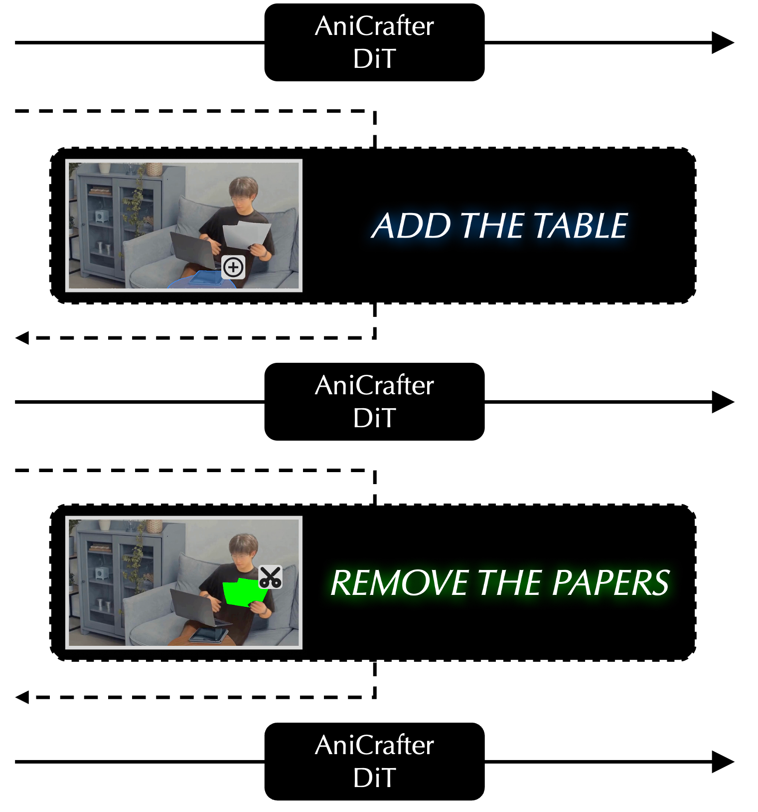
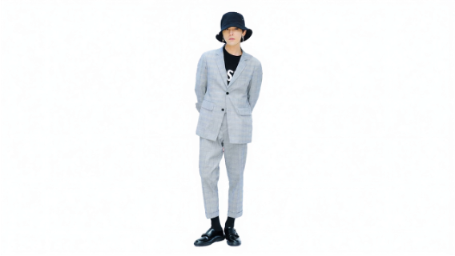

Avatar-Background
Output



TBA
This website is adapted from Nerfies and LLaVA, licensed under a Creative Commons Attribution-ShareAlike 4.0 International License. We thank the LLaMA team for giving us access to their models, and open-source projects, including Alpaca and Vicuna.